Nanae
Nanae · Hokkaido
Nanae
Highlighted on the Hokkaido map.
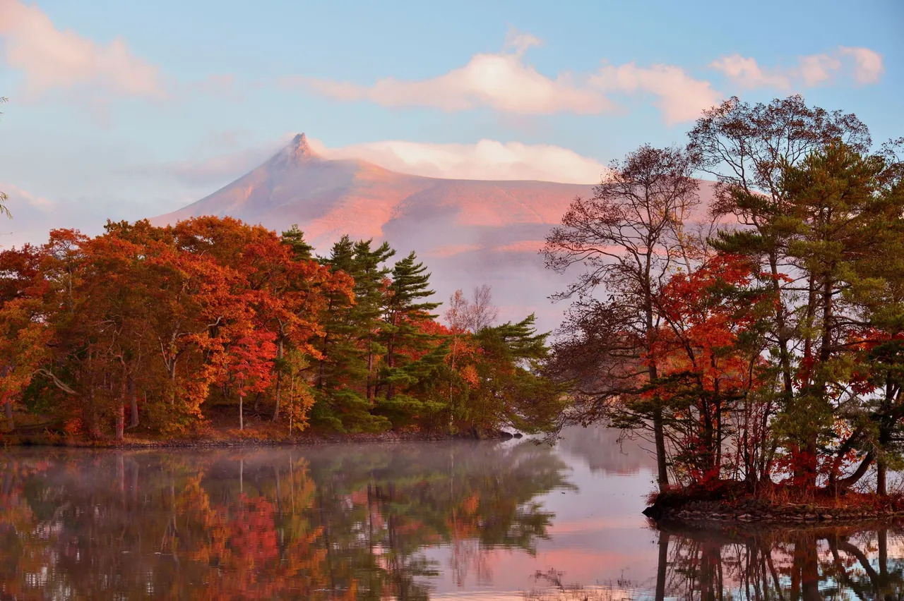
Stay
陽燈しの郷
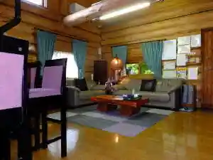
You Tomoshi No Sato
函館大沼 鶴雅リゾート エプイ
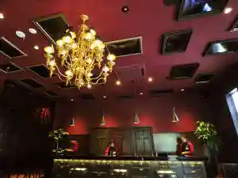
Hakodate Oonuma Tsuruga Rizooto Epui
民宿「ゆっくり大沼」
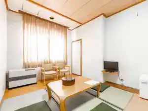
Minshuku ( Yukkuri Oonuma )
ステーションホテル旭屋
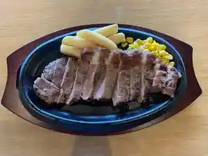
Suteeshonhoteru Asahiya
ペンション 風 ＫＡＺＡ
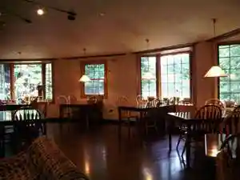
Penshon Kaze K A Z A
Dining
V-1
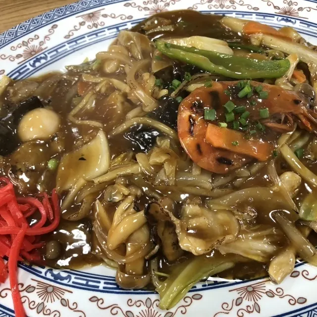
V-1
つぼ八 ななえ店
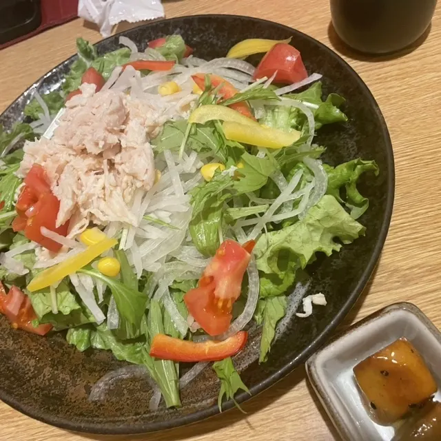
Tsubo Hachi Nanae Mise
セブンイレブン 渡島七飯店
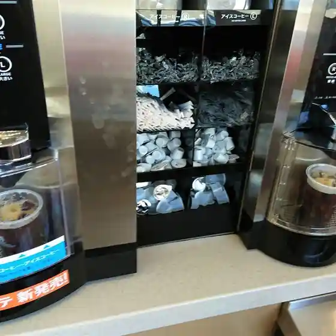
Sebun'Irebun Watarishima Nanae Mise
田舎家
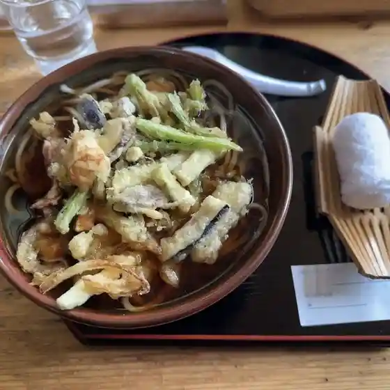
Inakaya
najura cafe
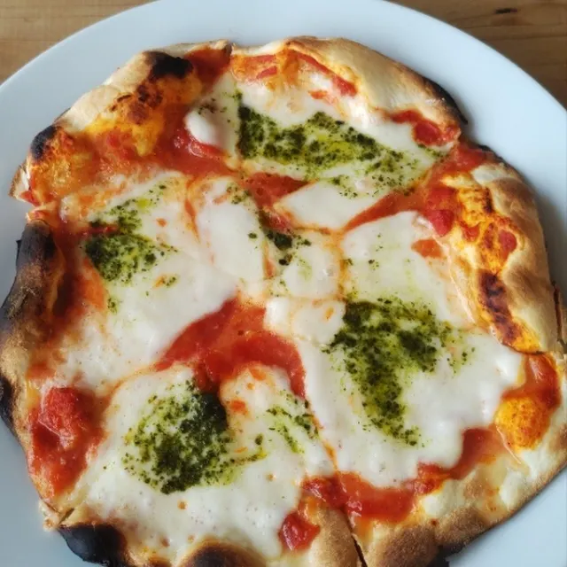
Najura Cafe
ランバーハウス
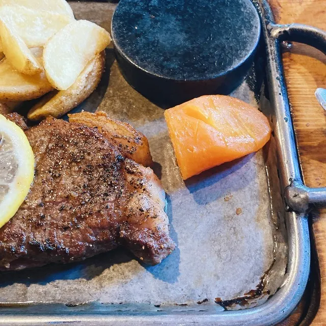
Ranbaahausu
朝の灯
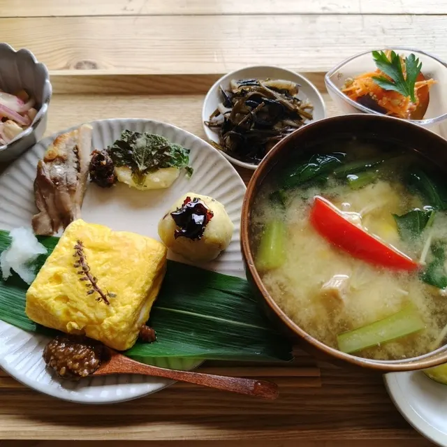
Asa No Tomoshibi
北海道カントリークラブ大沼コース
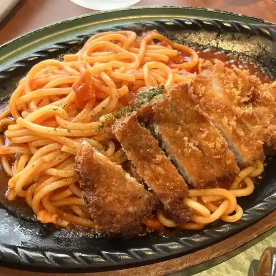
Hokkaidou Kantoriikurabu Oonuma Koosu
onuma wind cafe
Onuma Wind Cafe
KITCHEN & BAR DS
Kitchen & Bar Ds
Pino
Pino
ヒュッテ
Hyutte
ピーク・カフェ
Piiku Kafe
宮崎鯉屋
Miyazaki Koi Ya
セイコーマート 七飯大沼店
Seikoomaato Nanae Oonuma Mise
ら・む～
Ra Mu ~
陽だまり
You Damari
やきとり居酒屋 横丁
Yakitori Izakaya Yokochou
寄り道かなちゃん
Yorimichi Kanachan
谷口菓子舗
Taniguchi Kashi Ho
久保田牧場チーズ研究所 ミルクパーラー
Kubota Bokujou Chiizu Kenkyuusho Mirukupaaraa
大勝軒
Taishou Ken
福田農園
Fukuda Nouen
池田商店
Ikeda Shouten
Sights
Onuma Kokutei Park
Onuma Kokutei Park
Onuma Quasi-National Park south of Hakodate: lakes and 126 islets formed by Komagatake eruptions.
Shiro Tai Bokujo Lookout Shiro Tai Sukai Line
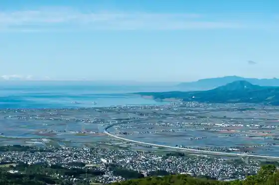
Shiro Tai Bokujo Lookout Shiro Tai Sukai Line
Jobutai Ranch viewpoint at about 550 m with panoramas of Komagatake, Mount Hakodate, and the Ono plain, plus night views.
Onuma Yusen
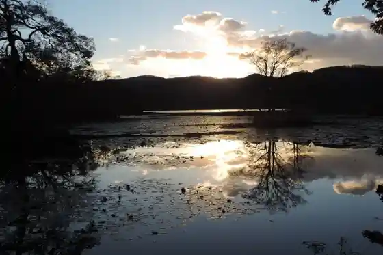
Onuma Yusen
Sightseeing boats on Onuma Lake among the islets, with Mount Komagatake as backdrop (about 30 minutes).
Hakodate Nanae Su no Park
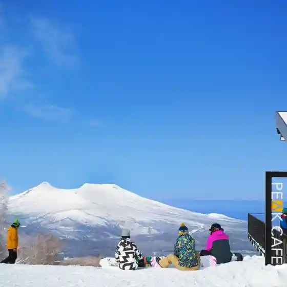
Hakodate Nanae Su no Park
Hakodate Nanae Snow Park ski resort reached by a long gondola to about 1,000 m, with views of Komagatake and Onuma.
Onuma Konuma Lakeside Promenade
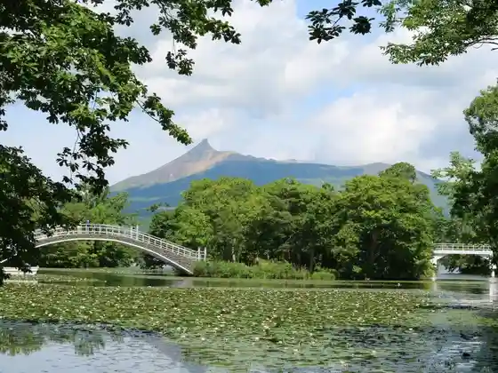
Onuma Konuma Lakeside Promenade
Lakeside walking paths linking Onuma and Konuma islets by bridges, with seasonal views of Mount Komagatake.
Numa no Ie
Numa no Ie
Numa-no-Ie, a shop founded in 1905 known for Onuma sightseeing dango sweets listed on Hokkaido tourism.
Ikusanda Onuma Kanuhausu
Ikusanda Onuma Kanuhausu
Ikkyander Onuma canoe house offering seasonal guided paddling tours on the lake below Mount Komagatake.
Hakodate Castle Kura
Hakodate Castle Kura
Hakodate Jozo sake brewery in the Oshima region, focused on sake paired with southern Hokkaido ingredients.
Higurashi Mountain Lookout
Higurashi Mountain Lookout
Higureyama viewpoint overlooking Onuma Quasi-National Park and Mount Komagatake.
Lighthouse Numa Mizu Basho Taigun Kiji
Lighthouse Numa Mizu Basho Taigun Kiji
Skunk-cabbage colony at East Onuma in spring within Onuma Quasi-National Park.